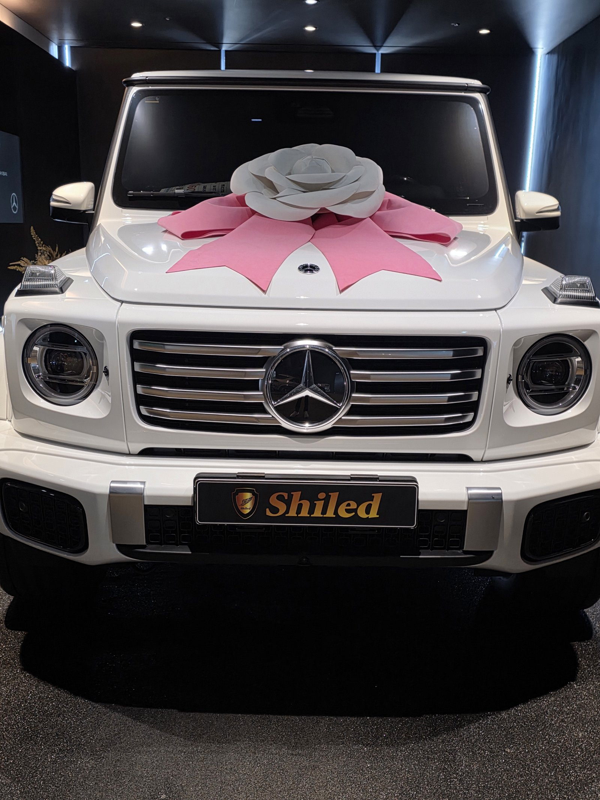
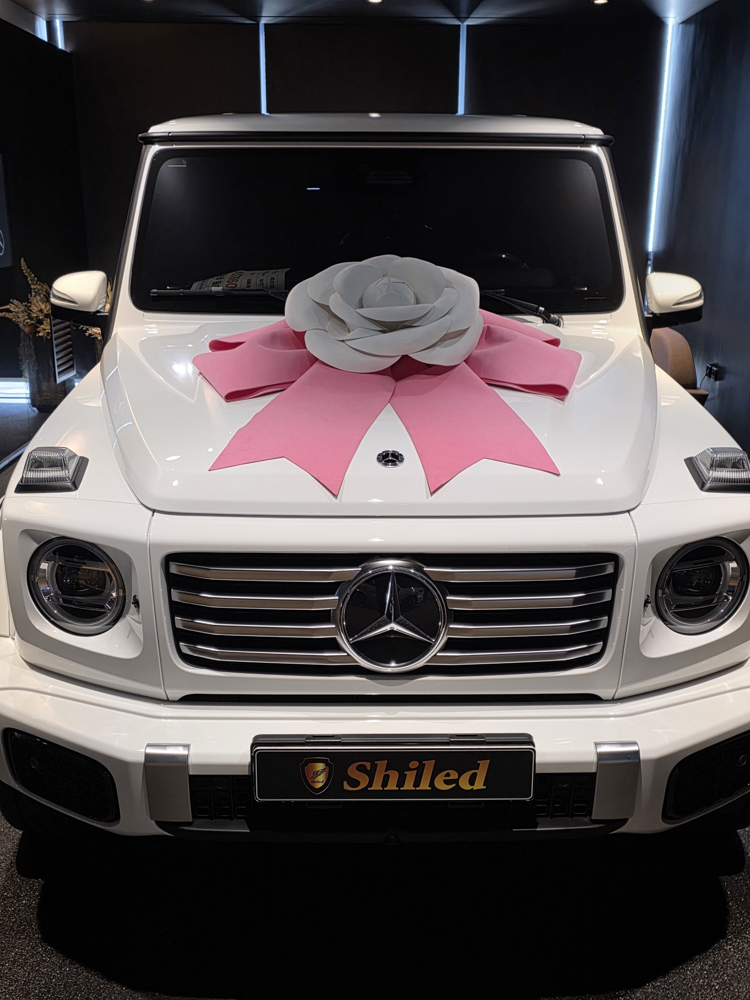
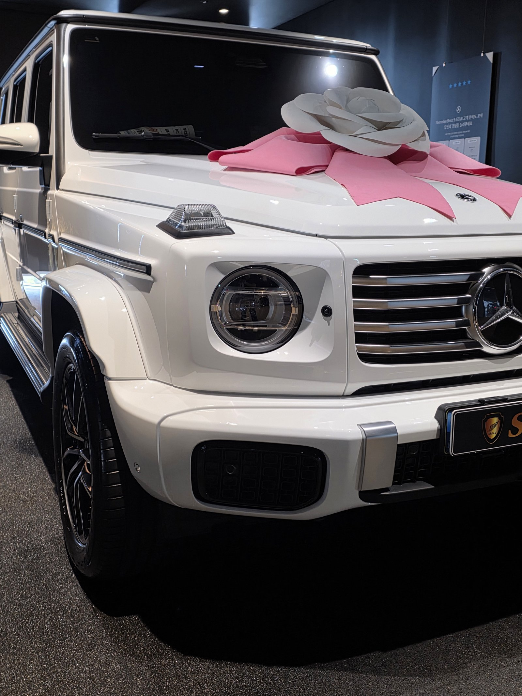
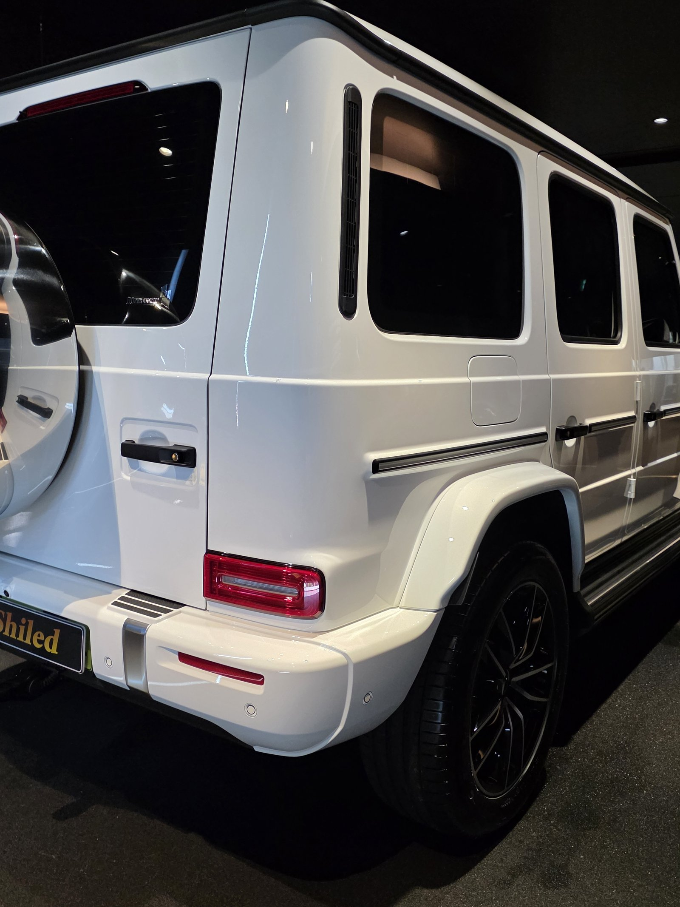
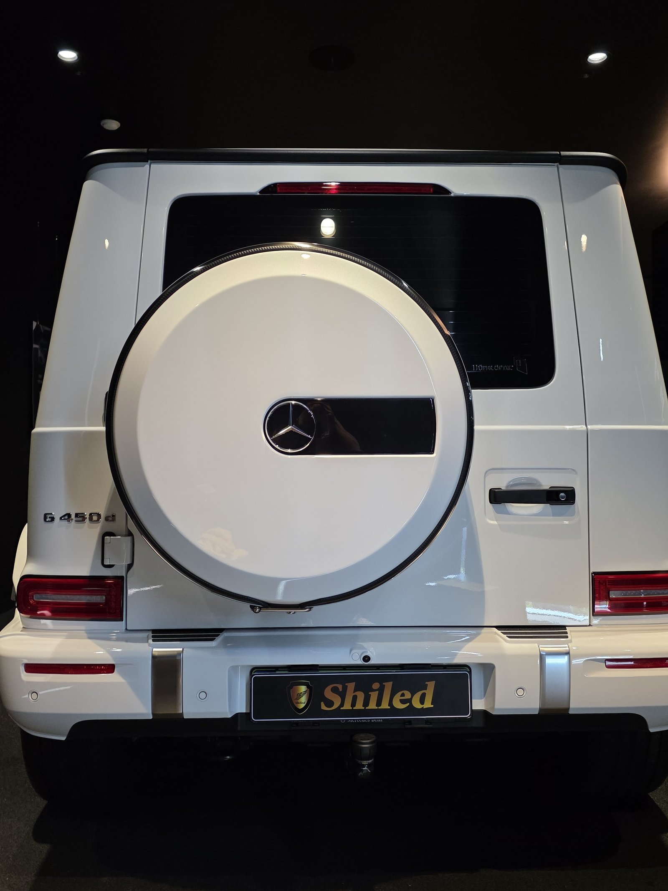
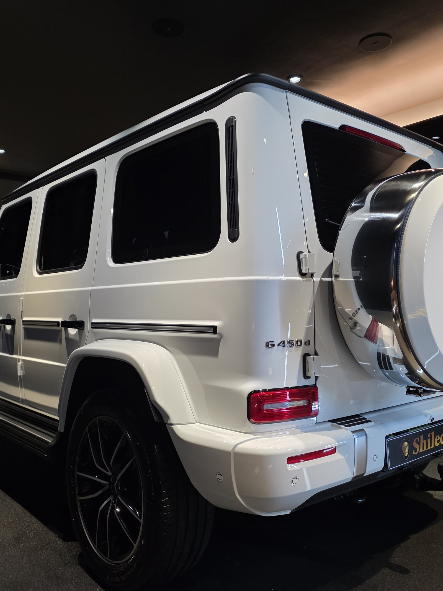
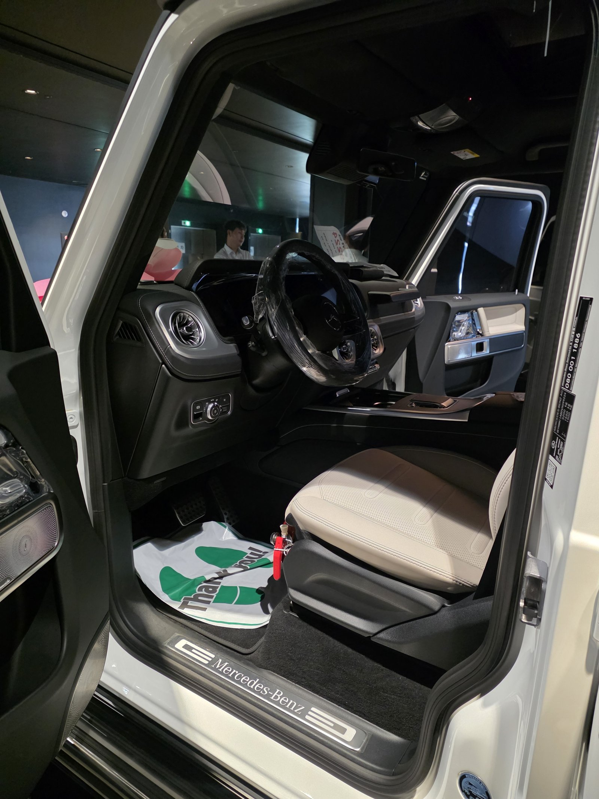
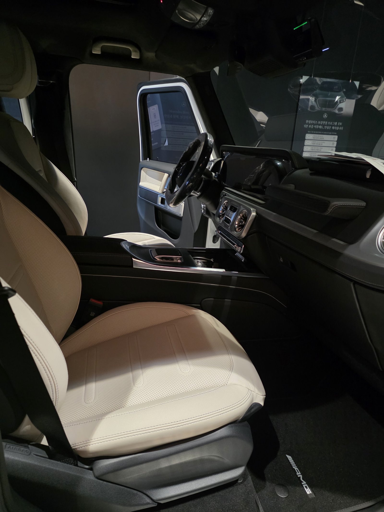
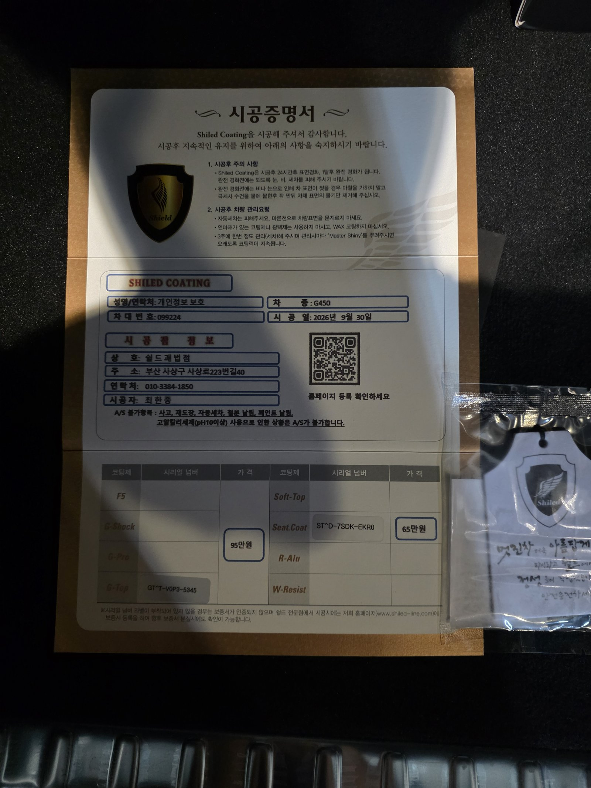

벤츠 G450, 백색입니다.
보닛 위에 출고 리본을 올린 채 인도를 기다리는 새 차입니다.
같은 날 백색 G450이 한 대 더 들어왔는데, 이 차는 부산 유리막코팅 중 G-TOP과 시트코팅으로 진행했습니다.

같은 G450인데 왜 코팅제가 다른가요?
같은 날 들어온 다른 G450은 F5로 진행했습니다.
F5는 색감과 광, G-TOP은 발수와 방오가 강점입니다.
어떤 차를 타느냐보다 어떻게 타실지가 코팅제를 가릅니다.
세차 주기가 길거나 야외 주차가 많다면 오염이 덜 붙는 쪽이 유리합니다.


G450 백색에 G-TOP을 올린 이유
G-TOP은 발수·방오성에 특화된 코팅입니다.
물이 맺혀 굴러 떨어지면서 오염을 함께 데려갑니다.
넓고 평평한 G클래스 면은 물이 고이기 쉬워, 부산 유리막코팅 작업에서 발수 성능이 체감되는 차입니다.
코팅제는 대표가 직접 개발·제조한 제품입니다.

기술자의 팁
발수 코팅이라도 물방울이 그대로 마르면 자국이 남습니다. 비 온 뒤나 세차 후에는 물방울을 한 번 걷어주시면 발수 성능을 더 오래 보실 수 있습니다.


밝은 가죽 시트도 함께 코팅했습니다
시트코팅은 가죽 표면에 보호층을 만들어 오염이 스며드는 것을 줄여줍니다.
이 차는 밝은 베이지 가죽이라 이염이 생기면 눈에 바로 띕니다.
외장은 G-TOP, 실내는 시트코팅으로 안팎을 같이 마무리했습니다.


시공증명서를 함께 드립니다
모든 시공 차량에 시공증명서를 드립니다.
차종·시공일·코팅제 시리얼 번호가 적혀 있고, 홈페이지에 등록해 보증을 받으실 수 있습니다. 이 차는 G-TOP과 시트코팅으로 기록돼 있습니다.

차종·시공일·코팅제 시리얼이 기재된 시공증명서
자주 묻는 질문
Q. F5와 G-TOP은 어떻게 고르나요?
A. 색감과 광을 우선하면 F5, 발수와 오염 방지를 우선하면 G-TOP을 권해 드립니다. 주차 환경과 세차 습관을 듣고 함께 정합니다.
Q. G-TOP 발수는 얼마나 가나요?
A. 관리 습관과 주차 환경에 따라 차이가 큽니다. 물방울을 방치하지 않고 정기적으로 세차해 주시면 오래 유지됩니다.
Q. 시트코팅은 왜 같이 하나요?
A. 시트코팅은 가죽 표면에 보호층을 만들어 오염이 스며드는 것을 줄여줍니다. 밝은 가죽일수록 청바지 이염이나 생활 오염이 눈에 잘 띄어 출고 전에 함께 하시는 경우가 많습니다.
Q. 코팅 후 세차는 언제부터 하나요?
A. 코팅이 자리 잡을 시간이 필요하므로 시공 직후 강한 세차는 피하는 것이 좋습니다. 정확한 시점은 인도할 때 안내해 드립니다.
Q. 쉴드광택 위치와 예약은 어떻게 하나요?
A. 부산 남구 유엔로220 1F 쉴드광택입니다. 예약·상담은 010-3384-1850, 대표 최한중이 직접 상담하고 책임 시공합니다.
새 차일수록 시작점이 다릅니다. 가장 깨끗할 때 입혀두십시오.
제품을 직접 만드는 사람이 직접 시공합니다.
부산에서 신차 유리막코팅을 고민 중이시면 편하게 연락 주십시오.
어떤 차를 타냐보다 어떻게 타냐가 중요합니다~!
시공 중에는 전화를 받지 못할 때가 많습니다.
카카오톡으로 차종과 원하시는 시공을 남겨주시면 확인 후 답변드립니다.
쉴드광택 · 부산 남구 유엔로220 1F · 대표 최한중